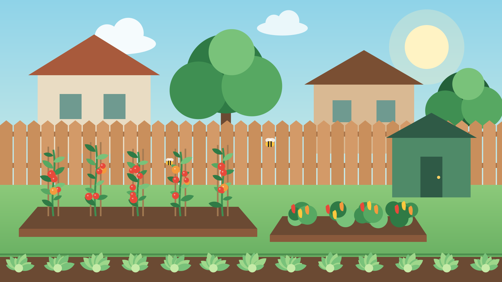
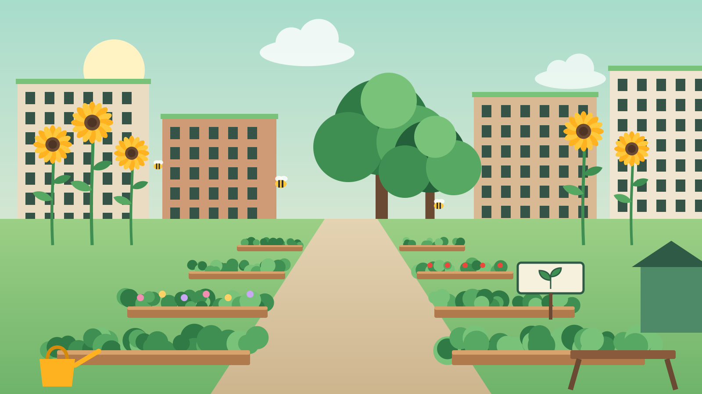
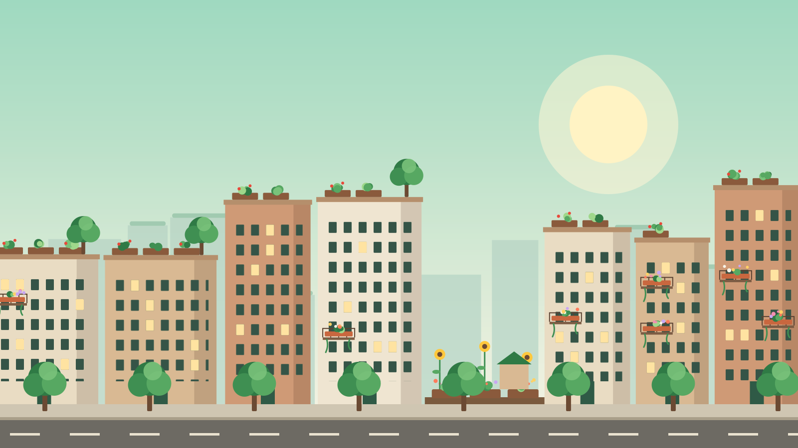
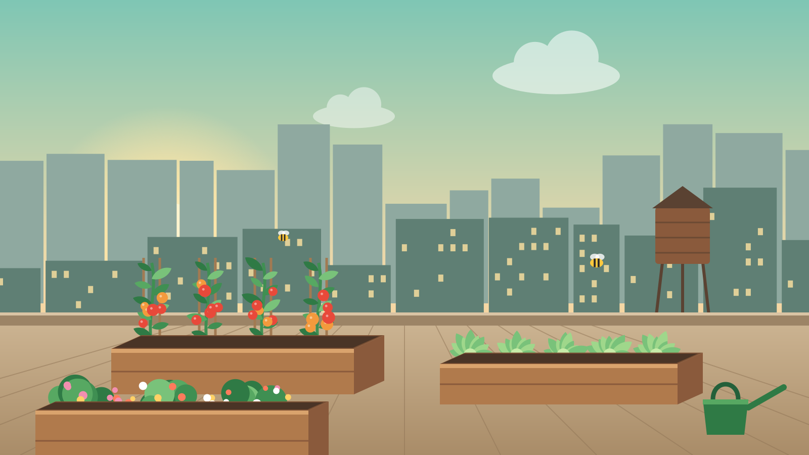
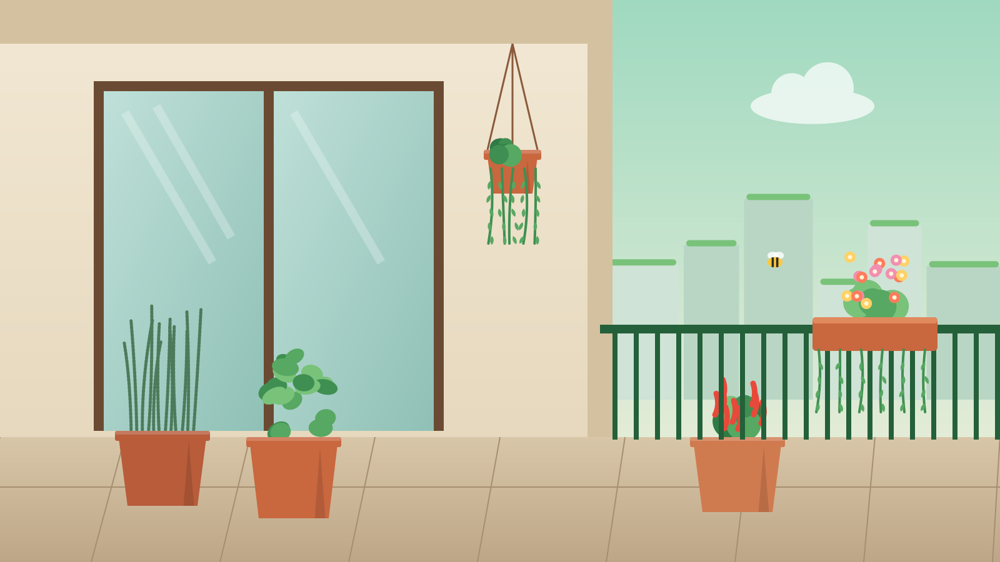

Type 1
Backyard Gardening
Growing tomatoes, peppers, lettuce, and other plants in a backyard.

What is it?
Food, flowers and herbs grown right where people live: on roofs, balconies, backyards and shared lots.
The definition
Urban gardening is the practice of growing fruits, vegetables, herbs, and other plants in cities and urban areas instead of on traditional farms.
It uses spaces such as rooftops, backyards, balconies, and community gardens to grow fresh food and make cities greener.

Press the numbered dots to see where urban gardens can grow.
Side by side
Both grow food. The biggest difference is where they happen and how much space they have.
Four types
Every city has room for at least one of these. Press “Learn more” on a card to see what grows there and what to watch out for.

Growing tomatoes, peppers, lettuce, and other plants in a backyard.

Turning unused rooftop spaces into productive gardens where people can grow vegetables and plants.
Shared gardens where neighbors work together to grow food and build stronger communities.

Growing herbs, flowers, and small vegetables in pots and containers on an apartment balcony.